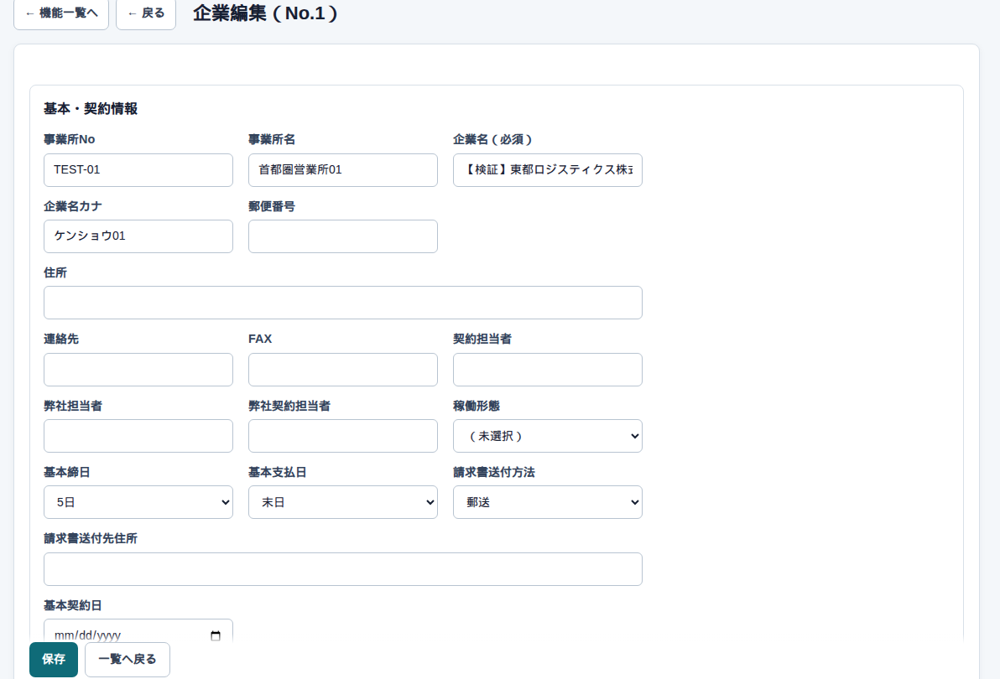

マスタ → 企業マスタ → 編集
企業の詳細
開くとこう見えます
1社分の台帳です。請求書に出す宛名・住所、会社の車両、担当の履歴もここに持ちます。

何をどこに入れるか
| ここ | 何をするか |
|---|---|
| 企業名 | 必須。請求や案件の候補に出る名前 |
| 企業名カナ / 事業所名 | 探すとき用。事業所は空でもよい |
| 郵便番号・住所・連絡先・FAX | 送付状や連絡用 |
| 基本締日 / 基本支払日 | 案件を作るときの初期値 |
| 口座 | 銀行コード4桁、支店3桁、名義。入金の話をするときの台帳 |
保存してから、同じ画面で請求先・車両・担当を足します。
請求先・車両・担当
請求先は、請求書の印字名称と送付方法です。取り纏めNoが同じ案件は、あとで請求をまとめられます。車両は会社持ちの車。担当は期間つきです。担当を変えると、前の人の終了日が自動で入ります。
気をつけること
請求書を出したあとに宛名を直しても、発行済みPDFは変わりません。新しい請求から新しい名前になります。